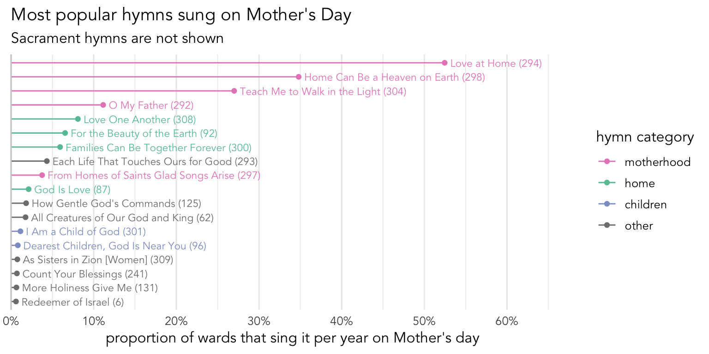
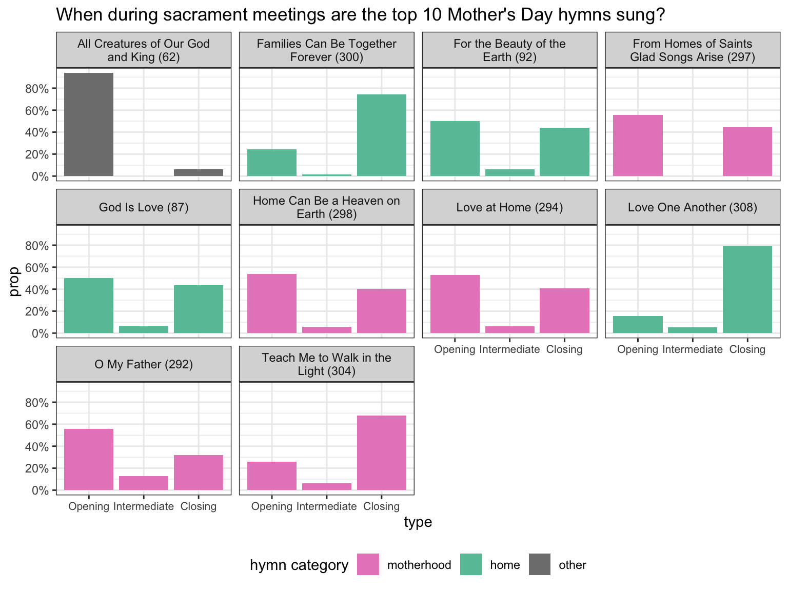

What hymns are sung around Mother’s Day?
holidays, frequency
Mother’s Day is approaching. In our church, we place a lot of value on Mother’s Day. Primary kids usually sing a song or two in sacrament meeting to their mothers and this used to be one of only two days during which missionaries could call home. Let’s see what hymns are sung on Mother’s Day. In this post, I’ll only focus on data from the United States and Canada since they’re the two countries with the most amount of data that also celebrate it on the second Sunday in May. This amounts to 328 sacrament meetings from 184 wards.
If you look in the Topics index at the back of the hymnal, you’ll see five songs listed under the “Motherhood” entry:
This figure shows the hymns in these categories and how they intersect. Note that all the Motherhood hymns are also listed under the “Home” category. If you’re like me, you might not even recognize some of the Home hymns. Five of them (

So, those hymns are supposedly the ones we would be most likely to draw from. Let’s see what hymns are actually sung. Figure Figure 1 shows the most popular hymns sung on Mother’s Day, excluding sacrament hymns.
The most popular Mother’s Day hymn is
The next most popular category of hymns on Mother’s Day was the “Home” category. As mentioned above, some of the hymns in that category are rather infrequent, but others are pretty popular, including
So, it’s clear that most music coordinators look at the “Motherhood” entry in the index, with some looking at the “Home” category. I think an honorable mention hymn is
While the likelihood of your ward singing any one of these hymns is relatively low, the likely hood of your ward singing any of these, say, top 10 hymns is pretty good. In fact, 89.3% of wards sing at least one of those 10 hymns each year. Over half sing two of them, a third sing just one, and a few wards sing three of them. So, odds are pretty good you’ll sing one or two of those most popular hymns.
Finally, we can look at when during sacrament meeting these most popular hymns are sung. Figure 2 shows the data for the top 10 Mother’s Day hymns. Perhaps the most striking trend is that

So that’s it for Mother’s Day hymns! This was a shorter post than normal, but there’s not too much else to say!